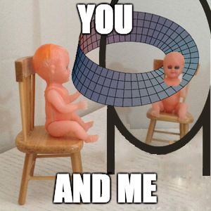

david junior and the flat universe
David Junior
&
The Flat Universe
David Junior is an immaterial, 2-dimensional being who, like all of us, navigates a series of networked surfaces in an imaginary temporality. He is quite
neurotic
and tied up with himself in a sort of mobius loop of self-reference.
